あなたにも、
まだ埋もれている価値がある
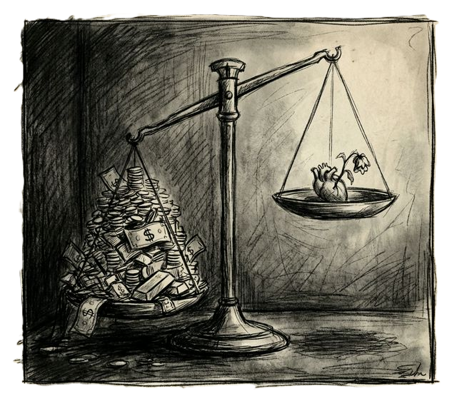
家庭菜園の野菜、使わなくなったけれどまだ使える物、ちょっとした知識や経験。
それらは「売るほどではない」と見過ごされがちですが、地域の誰かにとっては十分にありがたい価値です。
人と人の交流が少し進むと、埋もれていたものが誰かの「ありがとう」に変わっていきます。
地域の助け合いで、
暮らしが少し楽になる
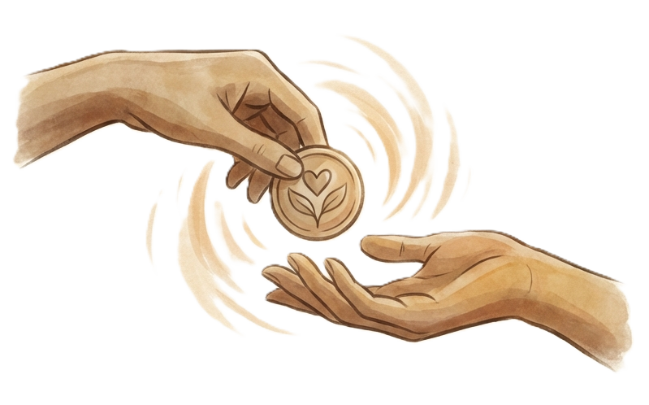
物価高や日々の負担が増える今、暮らしの安心をお金だけで支えるのは難しくなっています。
地域の中で助け合いやお裾分けがめぐることで、日常の負担を少し軽くし、いざという時に頼れる関係を育てていく。
楽市は、そんな新しい地域の支え合いをつくるアプリです。
楽市の3つのメリット
暮らしの中の価値を活かせる
お裾分け、得意ごと、空き時間が、地域の誰かの役に立ちます。
困ったときに頼れる
小さな困りごとを地域の中で相談でき、日常の安心につながります。
人とお店の縁が増える
住民同士だけでなく、地域のお店や活動とも自然につながれます。
地域循環コミュニティアプリ
「楽市」とは
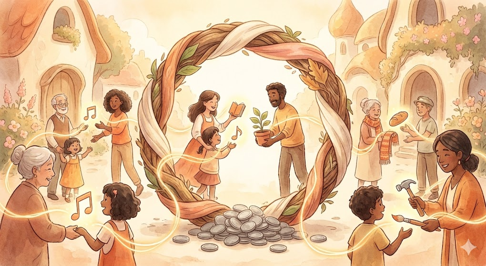
楽市は、地域の中にある助け合いを見える化し、暮らしの中で循環させる地域循環コミュニティアプリです。
仕組みはとてもシンプル。昔から日本にある「お互い様」を、今の時代に合う形にしたものです。
自分の得意や余っているものを誰かに届け、ポイントを受け取る。
誰かの手助けを受け、感謝としてポイントを渡す。
住民同士はもちろん、地域のお店や小さな活動も巻き込みながら、「ありがとう」が街の中で巡る状態をつくります。
これまで「売るほどではない」と見過ごされてきた知識やお裾分けや手助けを、誰かにとっての価値として循環させることを目指しています。
楽市が大切にしている考え方
楽ポイントは、貯め込むためのものではなく、地域の中で「ありがとう」をめぐらせるためのものです。
一部の人だけに偏らず、助けたり助けられたりしながら、無理のない関係が続いていくことを大切にしています。
1. ポイントが偏りすぎない仕組み
「楽ポイント」には、貯め込みすぎたり、受け取りすぎたりしないための考え方があります。
- 貯め込みの禁止:
上限に達すると、それ以上は貯められません。「稼ぎすぎ貯めすぎ」に意味がなくなる設計です
貯めることに意味がなくなれば、適切な循環が生まれ、格差も権力関係もなくなります。 - 自発的な貢献:
下限に達すると、一時的に「受け取ること（御恩）」ができなくなります。
「もらうばかり」ではなく、「次は自分に何ができるか」という貢献の心が、自然に芽生える仕組みです。
2. 循環が起こる仕組み
楽市では、プラスやマイナスの数字を競う必要はありません。
助けたり助けられたりしながら、どちらかに偏りすぎない関係が続くことを大切にしています。
- マイナスは「信頼の先払い」: 一時的にマイナスになっても、それは「いつか返せばいいもの」。負い目を感じる必要はありません。
- プラスは「循環の停滞」: 溜まりすぎたプラスは、むしろ循環を止めているサイン。誰かに譲るタイミングです。
多くの人と交流し、交換を楽しみながら、「ゼロ（中庸）」に近い状態を保つ。
どちらかに偏りすぎないフラットな関係こそが、私たちが目指す理想のコミュニティです。
| 項目 | 現代のお金（円） | 楽ポイント |
|---|---|---|
| 目的 | 蓄積・独占 | 循環・共有 |
| 理想の状態 | 多ければ多いほどいい | ゼロ（中庸） |
| 心の動き | 減るのが怖い（不安） | 巡るのが楽しい（安心） |
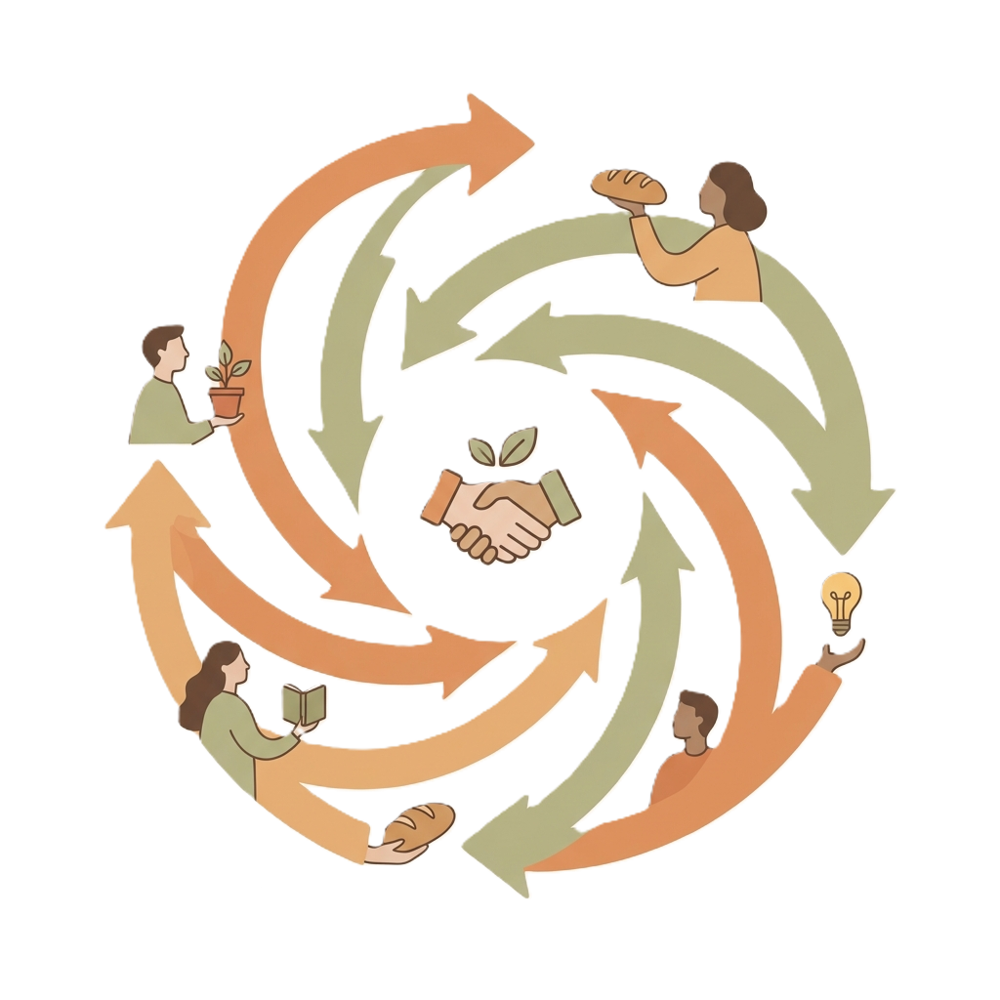
利益を溜め込むのではなく、感謝と共に循環させる。
それが「楽市」の経済圏です。
楽市で生まれる3つの助け合い
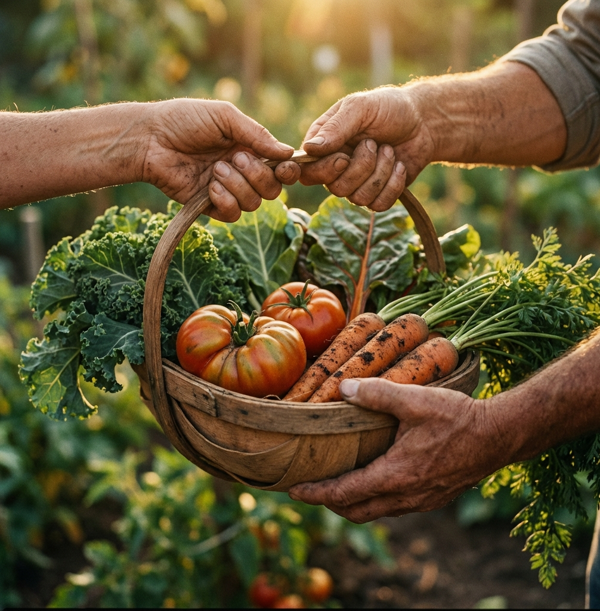
できることを届ける奉公（ほうこう）
自分にできることが、誰かの喜びに
大きなことではなくても、今の自分にできることが、誰かの助けや喜びにつながっていきます。
- モノを分ける: 家庭菜園で採れすぎた野菜や、まだ使える不用品を譲る。
- 特技を活かす: 趣味の手芸や占い、得意なことをちょっとだけお裾分け。
- 手助けをする: 家具の組み立てや買い物、誰かの話し相手になること。
他者へ価値を届けた証として、楽ポイントが加算（+）されます。

助けてもらう御恩（ごおん）
困ったことを誰かに助けてもらう
困ったときに無理を抱え込まず、地域の中で自然に頼れる関係を育てていきます。
- モノを借りる: 必要な道具を借りたり、不用品を譲り受けたり。
- 知恵を借りる: スマホの設定やパソコンの不調、ちょっとした相談。
- 手を借りる: 重い荷物の運搬や庭仕事、急な買い物のお手伝い。
他者の価値を受け取った証として、楽ポイントが消費（-）されます。

お店とつながる楽座（らくざ）
地域内のお店を知るきっかけに
楽ポイントを使ってサービスや商品にふれることで、今まで知らなかったお店と出会うきっかけが生まれます。
お金だけではない「顔の見える交流」を広げ、地域全体の活気につなげていきます。
- お店を知るきっかけ： サービスや商品を気軽に体験し、お店との新しい縁を作ります。
- 街の再発見： 広告には載っていない、地元ならではの価値を直接知ることができます。
- 地域で支え合う： 住民同士、お店同士が支え合うことで、強い地域経済を育てます。
「楽市」は、今のお金（通貨）を否定するものではありません。 それと上手く役割を分担し、共存することで、地域の生活に新しい選択肢と活気を作り出すことを目指しています。
楽市で
こんなやりとりが生まれます

取れすぎた家庭菜園のトマトをお裾分け
「もったいない」を「ありがとう」へ
Aさんは、家庭菜園でトマトが取れすぎてしまいました。余った分を楽市に出品。（500楽ポイントの奉公）
Bさんが、それを500楽ポイントで受け取ってくれました。（500楽ポイントの御恩）
Aさんはせっかく作った野菜を捨てずに済み、Bさんはお金を節約して新鮮なトマトを手に入れることができました。
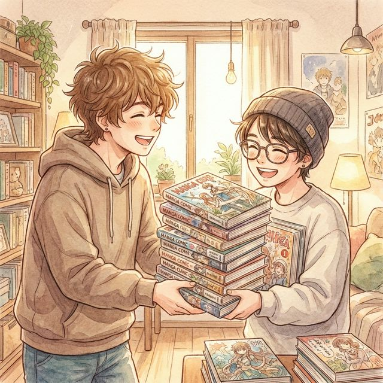
本棚で眠っていた完結済み漫画セット
物語の感動を次の誰かへバトンタッチ
Cさんは、読み終わった漫画全巻セットの処分に困っていました。捨てるのは忍びなく楽市に出品。（1,000楽ポイントの奉公）
Dさんは、ずっと読みたかったその作品を見つけ、即座に交換。（1,000楽ポイントの御恩）
Cさんは本棚がスッキリ片付き、Dさんは休日の楽しみをお得に手に入れ、作品トークで盛り上がりました。

小さくなった子供服を譲渡
思い出の服が、次の世代の笑顔に
Eさんは、子供が成長して着られなくなった綺麗な服を「誰かに着てほしい」と出品。（800楽ポイントの奉公）
Fさん（新米ママ）は、保育園の着替えが足りず困っていたところこれを発見。（800楽ポイントの御恩）
Eさんはタンスの整理ができて思い出も引き継がれ、Fさんは「先輩ママのセンス素敵！」と大喜びでした。
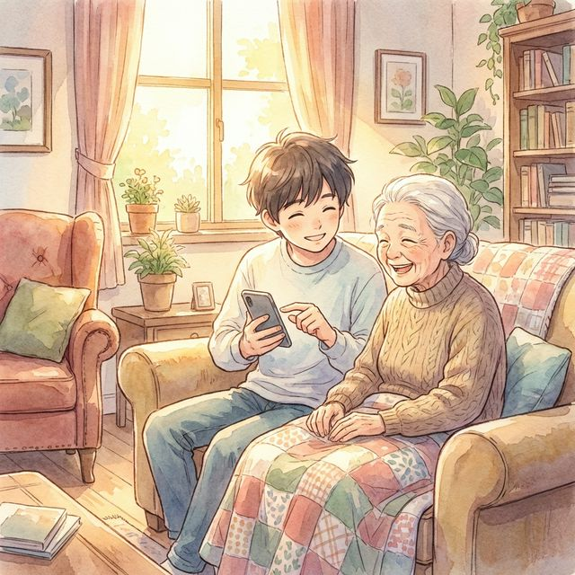
スマホの操作の仕方を教えてもらう
「アプリの入れ方がわからない」「写真が送れない」など、スマホの困りごとを解決
Gさんは、スマホの初期設定がわからず困っていました。楽市で「スマホ設定手伝います」というHさんの投稿を発見。（800楽ポイントの御恩）
Hさんは得意な知識でササッと設定してあげました。（800楽ポイントの奉公）
Gさんはすぐにスマホを使えるようになり、Hさんは自分のスキルで感謝され、嬉しい気持ちになりました。

簡単なパソコンの修理を依頼
「困った」が「助かった！」に変わる瞬間
Iさんは、仕事で使うPCが急に動かなくなり焦っていました。「プロに頼むと高いし…」と、近所の詳しい人に修理の依頼を出品。（2,000楽ポイントの御恩）
Jさんは、自作PCや機械いじりが趣味。「その症状ならすぐ直せそう」と、場所を聞いてすぐに訪問。（2,000楽ポイントの奉公）
Jさんが手際よく原因を特定して修理。データも無事で、Iさんは「本当に助かった！」と大感謝しました。

SNS用アイコンの似顔絵作成
「好き」なことが誰かの「助け」になる
Kさんは、絵を描くのが趣味で、SNSアイコン作成を募集。（1,200楽ポイントの奉公）
Lさんは、副業を始めたばかりで信頼できるプロフィール画像を探していました。（1,200楽ポイントの御恩）
Kさんは自分の絵が誰かの役に立ち自信がつき、Lさんは素敵なアイコンで活動をスタートできました。

お買い物代行
（風邪で買い物ができない時など）
「急な体調不良で外に出られない」そんな時、近所の誰かが助けを依頼。
Mさんは、高熱が出て食料を買いに行けず困っていました。近所のNさんが買い物代行を楽市で引き受けました。（1,000楽ポイントの奉公）
Nさんは自分の買い物のついでにMさんの分も届けてあげました。（1,000楽ポイントの御恩）
Mさんは安心して療養でき、Nさんは「困った時はお互い様」と温かい交流が生まれました。
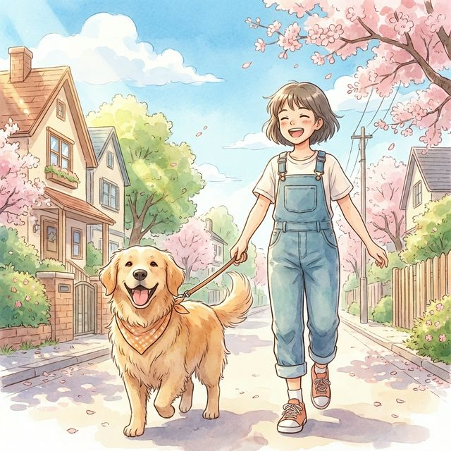
忙しい日のワンちゃんの散歩代行
忙しい生活を地域の人たちでサポート
Oさんは、急な残業で帰宅が遅くなり、愛犬の散歩に行けず焦っていました。（800楽ポイントの御恩）
Pさん（犬好きの学生）は、犬と触れ合いたいと思い、散歩代行を引き受けました。（800楽ポイントの奉公）
Oさんは安心して仕事に集中でき、Pさんは可愛いワンちゃんと楽しい時間を過ごし、犬も大満足でした。

お庭の掃除・草むしり
「足腰が痛くて庭の手入れができない」そんな悩みを解決。
Qさん（高齢者）は、庭の雑草が伸び放題で足腰も痛く、手入れができずに困っていました。（2,000楽ポイントの御恩）
Rさん（園芸好き）は、土いじりが好きで、草むしり代行を楽市で引き受けました。（2,000楽ポイントの奉公）
Qさんは庭がスッキリして気持ちよく過ごせ、Rさんは「無心になれてリフレッシュできた」と喜ばれました。
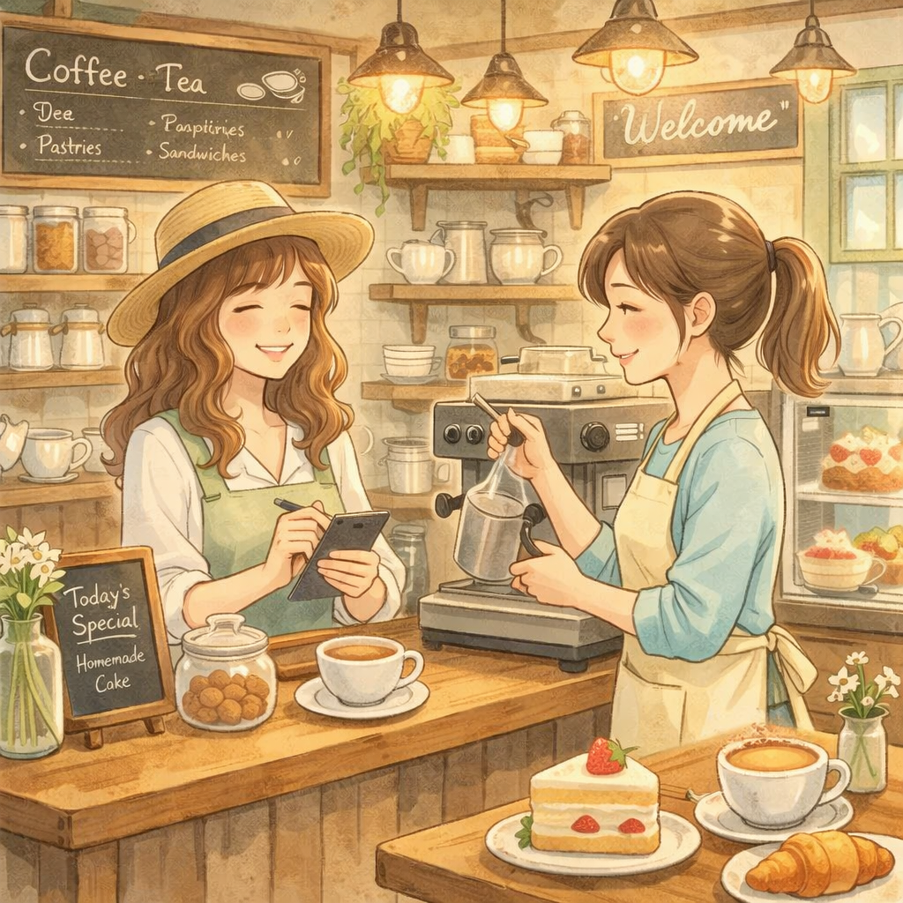
雨の日限定！カフェの空席活用
「もったいない空席」を「新しい出会い」へ
S店長（カフェ経営）は、雨でお客さんが来なくてパンが余りそうでした。楽市で「雨宿りセット（コーヒー＆パン）」を500楽ポイントで出品。（500楽ポイントの奉公）
Tさん（近所の主婦）は、おやつを探していてこれを見つけ、ポイントで交換。（500楽ポイントの御恩）
S店長はフードロスを防ぎつつお店の宣伝になり、Tさんは美味しいカフェタイムをお得に楽しめ、新しいお店の常連になりました。
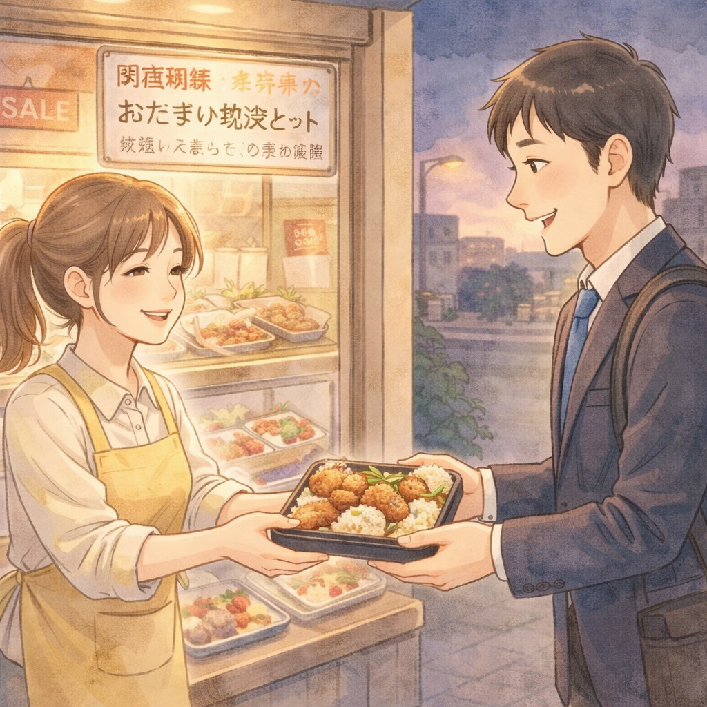
余ってしまった食材を地域のみんなでシェア
余ったお弁当が初来店のきっかけに
U店長（惣菜店）は、作りすぎた唐揚げ弁当が廃棄になりそうで心を痛めていました。（600楽ポイントの奉公）
Vさん（独身サラリーマン）は、仕事帰りに夕食を作る元気がなく、楽市でこれを発見。（600楽ポイントの御恩）
U店長は廃棄ゼロを達成し、Vさんは手作りの温かいお弁当で元気をチャージできました。これをきっかけに、VさんはUさんのお店を気に入り、定期的にお店に通うようになりました。

お店の空きスペースを、地域の人たちに開放
「使っていない空間」が「みんなの場所」に
W店長（美容室）は、平日の午前中に誰もいない店内スペースを「もったいないな」と感じていました。楽市で「空き時間に場所を提供します」と投稿。（1,000楽ポイントの奉公）
Xさん（地域住民）は、気軽に集まれる場所を探していたところこれを発見。早速、近所の仲間を集めて小さな手芸の集まりを開催しました。（1,000楽ポイントの御恩）
Xさんたちは「こんな素敵な場所があったなんて！」と大喜びで毎週集まるように。W店長も、参加者の口コミで美容室を知った人が来店してくれる嬉しい縁に繋がりました。
楽市が大切にしたい価値
楽市が大切にしたいのは、利益になるかどうかだけでは測れない価値です。
売れるかどうかではなく、誰かの役に立つか。
一度きりの消費ではなく、「ありがとう」が続いていくこと。
小さく見える価値も、地域の中で生かされれば、暮らしを支える大切な力になっていきます。
| 今の経済で起こりやすいこと | 楽市が大切にしたいこと |
|---|---|
| 利益にならないと届かない | 小さな価値も地域で生かせる |
| 売れるかどうかが基準 | 誰かの役に立つかが基準 |
| 一度きりの消費で終わる | 「ありがとう」が循環していく |
これまで見過ごされてきた価値が、
地域の中で「ありがとう」になってめぐっていく。
それが、楽市が育てたい新しい地域のつながりです。
楽市に参加する
楽市は、地域の中で助け合いとつながりを育てていくコミュニティアプリです。
「自分にできることを誰かの役に立てたい」「困ったときに頼れるつながりがほしい」そんな方は、まずは気軽に参加してみてください。
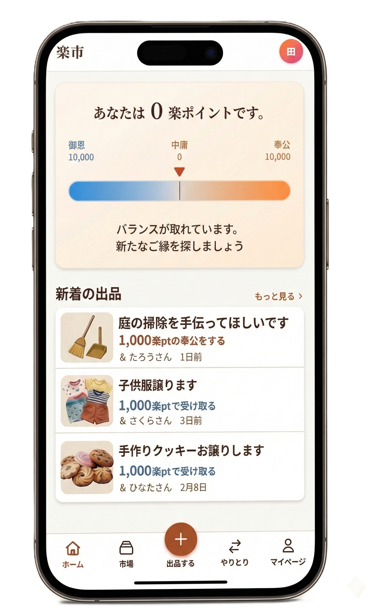
※画像はイメージ画像です。
安心して使っていただくため、参加は承認制で運営しています。スマホひとつで始められます。参加にお金はかかりません。
※現在はベータ版運用中です。